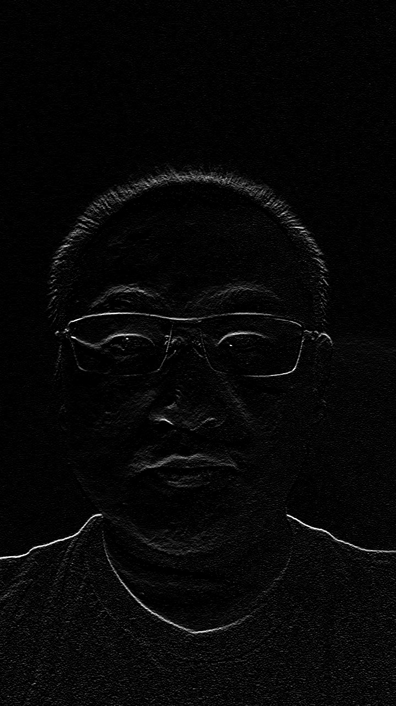

CS585 Assignment 1
Zhongping Zhang
02/03/2021
Problem Description
- 1. Create a grayscale image of your face by converting your color image using one of the conversions we discussed in class last week.
- 2. Come up with another way of manipulating your face that produces an interesting output. In this question, I use Sobel operator to detect the edge of the gray image.
Algorithm
- 1. Calculate the weighted sum of RGB channels to get the gray image. The weights are 0.299, 0.587, 0.114 for red, green, and blue channels respectively.
- 2. I use Sobel operator to calculate the vertical edge of the gray image. The specific value of Sobel operator is [[1, 2, 1], [0, 0, 0], [-1,-2,-1]].
Results
| | Source Image | Target Image |
| rgb2gray |
|
 |
| Sobel operator |
|
 |